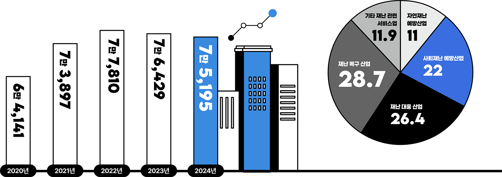
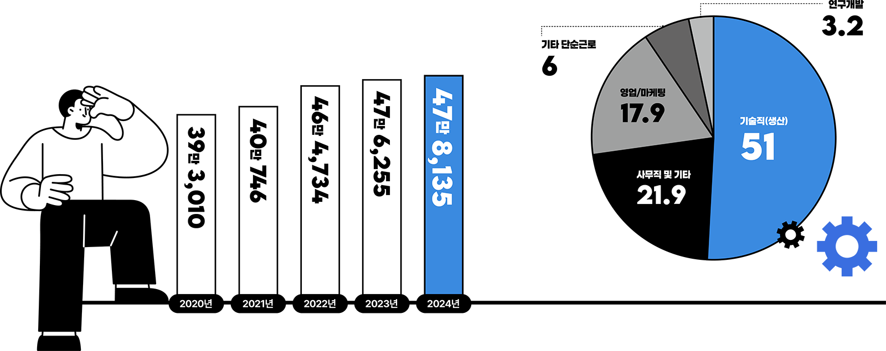
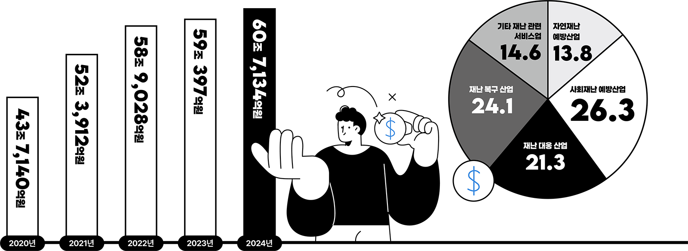
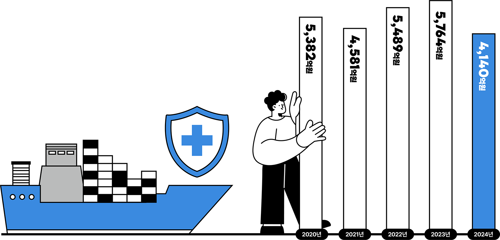

세이프티 INFO
재난안전산업,
성장의 문턱을 넘다
사업체 줄고 종사자·매출 늘었다
양적 성장에서 ‘질적 성장’으로
재난안전산업은 국가 경제와 사회안전망을 떠받치는 핵심 산업 중 하나다. 2025년(2024년 기준) 재난안전산업 실태조사 결과에 따르면 사업체 수는 전년대비 소폭 감소했지만 종사자 수, 매출액이 모두 꾸준한 증가세를 보이며 산업 규모가 확대되고 있는 것으로 나타났다. 다만 산업의 외형적 확대에 비해 수출 비중은 낮은 수준에 머물러 있어 향후 경쟁력 확보를 위한 정책적 지원이 뒷받침되어야 한다는 분석이다.
01‘재난안전산업’
관련 사업체 수
2024년 기준 재난안전산업 관련 사업체 수는 7만 5,195개사로 집계됐다. 이는 2020년(6만 4,141개사)과 비교해 약 17% 증가한 규모로, 최근 5년간 재난안전산업이 꾸준한 성장세를 이어가고 있음을 보여준다. 다만 2022년 7만 7,810개사로 정점을 기록한 이후 2023년과 2024년에는 소폭 감소세를 보였다. 이는 산업 구조조정과 기업 간 경쟁 심화, 시장 재편 과정이 일부 반영된 결과로 풀이된다.
02‘재난안전산업’
업종별 비중(대분류)
재난안전산업을 업종별로 살펴보면 재난복구 산업(28.7%)과 재난대응 산업(26.4%)의 비중이 절반 이상을 차지했다. 반면 자연재난 예방산업은 11.0%에 그쳤다. 이는 우리 사회가 여전히 재난 발생 이후 대응과 복구에 더 많은 자원을 투입하고 있음을 보여준다.

03‘재난안전산업’
종사자 수
2024년 재난안전산업 종사자 수는 47만 8,135명으로, 전년(47만 6,255명) 대비 소폭(0.39%) 증가했다. 2021년 40만 명 수준이었던 종사자 수는 2022년 46만 명대로 크게 증가한 이후 2024년까지 47만 명대를 유지하고 있다. 이는 재난안전산업이 정보통신기술(ICT), 스마트 안전관리, 산업안전, 시설 유지관리 등 다양한 분야로 확장되면서 전문 인력 수요가 지속적으로 늘어난 결과로 분석된다.
04직무별 재난안전산업
분야 종사자 수
직무별 종사자 비중을 보면 기술직(생산)이 51.0%로 가장 많았으며, 연구개발 인력은 3.2%에 그쳤다. 현재 산업 구조가 제품 생산과 현장 서비스 중심으로 형성되어 있음을 알 수 있다.

05‘재난안전산업’
부분 매출액
2024년 재난안전산업 부문 매출액은 60조 7,134억 원으로, 전년(59조 397억 원) 대비 1조 6,737억 원 증가(2.8%)한 것으로 나타났다. 2020년과 비교하면 4년 만에 약 39% 증가한 수치다. 같은 기간 사업체 수 증가율(약 17%)을 크게 웃돌아 재난안전산업의 외형 확대뿐 아니라 시장 규모와 산업 가치도 함께 성장하고 있음을 보여준다.
06‘재난안전산업’
업종별
매출액(대분류)
앞서 사업체 비중에서는 재난복구 산업이 가장 높았지만, 매출액은 사회재난 예방산업(26.3%)이 가장 높았다. 이는 산업안전 솔루션, 스마트 감시시스템 등 예방 분야가 상대적으로 높은 부가가치를 창출하고 있음을 시사한다.

07‘재난안전산업’
수출액
2024년 재난안전산업 수출액은 4,140억 원으로 집계됐다. 이는 전년(5,764억 원) 대비 1,624억 원 감소한 규모로, 감소율은 약 28.2%에 달한다. 재난안전산업 수출액은 2021년 4,581억 원에서 2022년 5,489억 원, 2023년 5,764억 원으로 증가하며 성장세를 이어왔으나, 2024년에는 큰 폭의 감소를 기록했다. 주요 수출국의 투자 위축, 국제 정세 불안정 등의 영향이 복합적으로 작용한 것으로 분석된다.

K-Safety Insight
재난안전산업, 이제는 ‘규모’보다 ‘경쟁력’의 시대
2024년 재난안전산업은 사업체 수가 소폭 감소했음에도 종사자 수와 매출액이 꾸준히 증가하며 양적 성장에서 질적 성장 단계로 진입하고 있음을 보여줬다. 기업 수는 2022년 이후
다소 줄었지만 산업 전체 매출은 처음으로 60조 원을 돌파했고, 종사자 수도 47만 명대를 유지하며 안정적인 성장세를 이어갔다. 이는 시장이 성숙 단계에 접어들면서 경쟁력 있는
기업 중심으로 재편되고 있음을 의미한다.
반면 연구개발 인력 비중은 3.2%에 불과하고 수출액은 전년 대비 28.2% 감소했다. 국내 시장은 성장하고 있지만 글로벌 경쟁력
확보라는 과제는 여전히 남아 있는 셈이다. 앞으로 재난안전산업이 한 단계 더 도약하기 위해서는 기술개발 투자 확대와 국제표준 대응, 해외 실증 및 수출 지원 정책이 뒷받침돼야
한다.